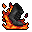
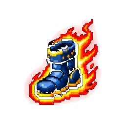

#04 · weapon_04MegabonkFlamewalkerНаша иконкаAshstepПепельный шагЭффект оригинала в MegabonkОставляет за персонажем огненный след, наносящий урон.ИсточникНаш PNG · 04Связь по ID · JSONОсновной — актуальный · weapons-current64 px32 px